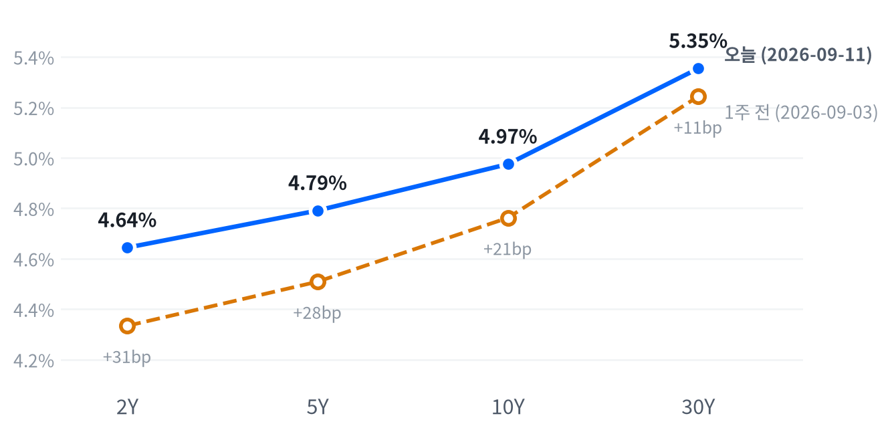

US MARKET BRIEF
근원 CPI 서프라이즈·유가 급락 속 뉴욕증시 반등, 단기채 금리 더 뛰며 커브 평탄화
미국 2026년 9월 11일 거래일 · 한국 9월 12일 발행. 가격은 일간 종가, 장중 경로는 30분봉 기준.
근원 소비자물가가 컨센서스를 웃돌았지만 헤드라인은 예상과 같았고, 유가가 급락하며 인플레이션 우려를 상쇄했다. 나스닥과 S&P500은 각각 0.96%, 0.86% 오르며 4거래일 만에 반등했다.
국채금리는 짧은 만기일수록 더 올라 2s10s 스프레드가 하루 만에 4.4bp 더 좁혀졌다. 메모리·저장장치 종목은 지수와 반대로 동반 하락했다.
전략 코멘트
근원 CPI가 컨센서스(0.2%)를 웃돌았지만 뉴욕증시는 유가 급락에 기댄 안도감으로 반등해 4거래일 연속 하락을 끊었다.
근원 물가 가속에도 시장이 반등했다는 것은 유가발 안도감이 인플레이션 우려보다 크게 가격에 반영됐다는 뜻이고, 이는 국채 커브에서 단기물이 장기물보다 더 오르는 베어 플래트닝 경로를 강화한다.
오늘의 결정은 유지이며 시계는 2~6주다. 다만 메모리는 20일 초과수익 반전을 근거로 상대비중을 OW에서 중립으로 낮춘다.
이 판단은 9월 16일 FOMC가 동결로 선회하거나 성명에서 인상 신호를 거둬들이면 무효화된다.
오늘의 장
아시아와 유럽 모두 오늘 미국장과 엇갈려, 9월 10일 종가 기준 평균 -0.50%·-0.69%로 하락한 채 마감했지만 미국은 CPI 이후 강하게 반등했다. 아시아는 지역 안에서도 갈렸다 — 닛케이(+0.20%)만 올랐고 항셍(-1.27%)과 상해종합(-0.43%)은 내렸다. 유럽은 DAX·FTSE100·유로스톡스50 모두 -0.5%~-0.9%대로 같은 방향으로 내렸다.
| 지수 | 종가 | 등락 | 기준일 |
|---|---|---|---|
| 닛케이 | 65,270.95 | +0.20% | 2026-09-10 |
| 항셍 | 24,954.47 | -1.27% | 2026-09-10 |
| 상해종합 | 3,934.40 | -0.43% | 2026-09-10 |
| DAX | 25,361.15 | -0.84% | 2026-09-10 |
| FTSE100 | 10,608.90 | -0.57% | 2026-09-10 |
| 유로스톡스50 | 6,268.97 | -0.67% | 2026-09-10 |
| VIX | 15.84 | -11.21% | 2026-09-11 |
간밤 선물은 전일 저녁 8시(ET) 무렵 저점을 찍은 뒤 CPI 발표 직후인 오전 9시께 고점까지 올랐다(주요 지수선물 고저 폭 1.18~1.56%). 현물은 상승 출발했고 갭은 S&P500 +0.59%, 나스닥 +0.79%, 러셀2000 +0.63%였다.
마감 위치로 보면 S&P(47)와 나스닥(30)은 하루 등락 범위의 중간께인 중단마감에 해당했고, 러셀2000(6)은 그 범위의 바닥권인 저점권마감으로 끝났다.
마감 위치는 당일 고저 대비 종가의 위치. 최근 2,259거래일 이력에서 고점권 경계는 84.6, 저점권 경계는 25.0이다.
오늘 하루를 움직인 것은 CPI 하나였다. 헤드라인이 예상과 같았고 유가가 급락해 인플레이션 우려를 상쇄하면서 지수 전체가 안도 랠리로 반응했지만, 메모리·저장장치 종목은 연중 급등에 따른 차익실현 매물로 지수와 반대로 움직였다.
아시아·유럽의 하락은 전날(9월 10일) 마감 결과라 오늘 미국의 반등과 실시간으로 엮이는 움직임은 아니다. 시차상 두 지역 모두 오늘의 CPI를 반영할 기회가 없었던 셈이고, 그 반영은 다음 미국장이 아니라 각 지역의 다음 개장에서 확인해야 한다.
주식
S&P500은 7,657로 마감해 최근 2년(504거래일) 가운데 이보다 높았던 날이 22일뿐인 자리를 지켰다. 최근 한 주로는 -1.17%, 한 달로는 -1.82% 밀린 뒤였다는 점을 감안하면 오늘 반등은 그 하락분의 일부를 되돌린 정도다. 나스닥(26,333)은 이보다 높았던 날이 30일뿐인 자리, 러셀2000(2,904)은 높은 쪽 14% 안에 드는 자리에서 움직였고, 오늘 상승 폭 자체는 세 지수 모두 평소 하루 변동의 보통 범위였다.
VIX는 15.84로 11.21% 급락해 평소 하루 변동폭의 1.71배에 이르는 큰 움직임이었다. 근원 CPI가 컨센서스를 웃돌았음에도 헤드라인은 예상과 부합했고, 유가 급락이 인플레이션 우려를 상쇄한 안도 심리가 반영된 결과로 보인다. VIX는 낮은 쪽 25% 안에 드는 자리로 다시 내려왔다.
| 지수 | 종가 | 등락률 |
|---|---|---|
| Dow | 52,573.29 | +0.98% |
| Nasdaq | 26,333.04 | +0.96% |
| S&P 500 Value | 235.32 | +0.89% |
| S&P 500 | 7,656.98 | +0.86% |
| S&P 500 Growth | 139.31 | +0.82% |
| Russell 2000 | 2,903.94 | +0.45% |
| 섹터 | 종가 | 등락률 |
|---|---|---|
| Technology | 187.67 | +1.32% |
| Industrials | 172.37 | +1.07% |
| Comm. Services | 112.60 | +0.99% |
| Consumer Disc. | 112.96 | +0.89% |
| Real Estate | 43.42 | +0.86% |
| Financials | 57.25 | +0.67% |
| Materials | 50.95 | +0.37% |
| Consumer Staples | 83.38 | +0.35% |
| Energy | 65.14 | +0.32% |
| Health Care | 165.36 | -0.18% |
| Utilities | 42.39 | -0.31% |
나스닥은 개장가(26,288) 부근인 09:30 ET에 저점을 찍은 뒤 11:00 ET에 고점(26,431, 개장 대비 +0.54%)을 만들고 소폭 되밀려 마감했다. S&P도 개장가가 그대로 저점이었고 오전 10시에 고점(개장 대비 +0.53%)을 찍은 뒤 오후 내내 그 부근에서 움직였다.
러셀2000은 반대로 개장 직후가 고점(2,927)이었고 15:30 ET에 저점(2,903, 개장 대비 -0.21%)을 만들어 개장가 대비로는 밀린 채 마감했다. 일별 등락률은 전일 종가 대비 +0.45%로 플러스였지만, 정작 장중에는 대형주 대비 소형주가 눌렸다는 뜻이다. 반도체 대형주 엔비디아도 10:00 ET 고점에서 15:30 ET 저점(218.15, -1.40%)까지 밀려, 지수 전체의 강세와 개별 대형주의 장중 약세가 함께 있었던 하루로 기록됐다.
지수가 0.86% 오른 하루의 절반 가까이는 기술 섹터 혼자 만든 몫이다(0.45%포인트). 커뮤니케이션 서비스(0.14%포인트)와 임의소비재(0.11%포인트)가 뒤를 이었고, 헬스케어(-0.02%포인트)와 유틸리티(-0.01%포인트)만 지수를 깎아 먹었다. 소재·부동산 두 섹터는 회귀로 비중을 가려낼 만큼 뚜렷하지 않아 빠졌고, 이 아홉 섹터로 설명되지 않는 몫은 0.03%포인트뿐이다.
기술 섹터가 지수를 끌어올린 하루였지만 스타일별로는 결이 달랐다. 성장주 지수(+0.82%)보다 가치주 지수(+0.89%)가 근소하게 더 올라, 성장-가치 구도로는 오히려 가치가 살짝 앞섰다. 기술 섹터의 강세가 곧 고성장주 전반의 강세를 뜻하지는 않는다는 신호이며, 다우(+0.98%)가 6개 지수 중 가장 크게 오른 것도 산업재·금융 같은 경기민감 업종이 받쳐준 결과다.
전략 해석. 오늘 상승이 믿을 만한지는 마감 위치와 섹터 쏠림을 함께 봐야 답이 나온다. 대형주는 장중 등락 범위의 중간께에서, 소형주는 바닥권에서 마쳤고 상승분의 절반 가까이가 기술 한 섹터에서 나왔다는 점은 이번 반등이 폭넓은 매수보다는 특정 대형주 쏠림에 가깝다는 뜻이다. 주식과 금리의 역상관도 최근 60거래일 -0.30로 직전 구간(-0.62)보다 느슨해져 있어, 금리가 더 오를 때 주식이 예전만큼 반응할지는 지켜볼 부분이다.
섹터 기간별 수익률
섹터 기간별 수익률
채권
10년물은 4.975%로 지난 두 해 이력을 통틀어 가장 높은 자리까지 올라섰고, 30년물(5.354%)도 이보다 높았던 날이 하루뿐인 자리다. 한 주 사이 2년물은 31.0bp, 10년물은 21.3bp, 30년물은 11.1bp씩 올라 만기가 짧을수록 더 크게 뛰었다. 오늘 하루의 움직임 자체는 10년물이 평소 수준(보통), 30년물은 사실상 잠잠했다(미미).
| 만기 | 9/11 금리 | 전일 변화 | 9/3 금리 | 주간 변화 |
|---|---|---|---|---|
| 2Y | 4.644% | +5.8bp | 4.334% | +31.0bp |
| 5Y | 4.791% | +3.1bp | 4.509% | +28.2bp |
| 10Y | 4.975% | +1.4bp | 4.762% | +21.3bp |
| 30Y | 5.354% | -1.2bp | 5.243% | +11.1bp |
출처: Naver 국채 종가, 전 만기 2026-09-11 17:05 ET 기준. 주간 비교는 2026-09-03. 1bp는 0.01%포인트.

2s10s 스프레드는 33.1bp로 전날(37.5bp)보다 4.4bp 더 좁혀졌고, 5s30s도 56.3bp로 주간 -17.1bp 축소됐다.
커브 모양은 오늘도, 주간으로도 베어 플래트닝이다. 오늘은 2년물이 5.8bp 오르는 동안 30년물은 오히려 1.2bp 내려 단기만 밀렸고, 한 주로 봐도 2년물(+31.0bp)이 30년물(+11.1bp)보다 훨씬 더 올라 커브가 계속 눌렸다. 2s10s는 전 만기가 같은 날짜(2026-09-11)로 정렬돼 있어 날짜 차이를 따로 설명할 필요는 없다.
명목금리는 실질금리와 기대인플레(물가에 대한 보상, 시장이 보는 값)로 나뉜다. 이 분해는 2026-09-10 기준이라 오늘 CPI가 만든 새 충격은 담지 못하지만, 그날 세션에서는 10년물이 12.0bp 오르는 동안 실질금리가 9.0bp를 이끌어 실질금리 주도였다. 같은 날 5년물은 실질금리와 기대인플레가 9.0bp·5.0bp로 함께 오른 동반 상승이었다.
실질금리가 앞선 상승은 성장 기대나 기간프리미엄(만기가 길수록 더 얹어 받는 값), 국채 수급 쪽 설명을 검토할 단서가 된다. 실제로 10년 기간프리미엄은 0.89%로 하루 0.8bp, 주간 1.4bp 올라 같은 방향이다. 다만 이 관측은 오늘 CPI 당일의 금리 움직임을 설명하는 근거로 쓸 수 없어, 그날 촉매와 오늘 국채 종가 사이의 정확한 기여도는 확인되지 않은 채로 남는다.
시장이 보는 5년 후 5년 선도금리(먼 미래 구간의 평균 금리)는 9월 10일 기준 5.15%로 하루 사이 10bp 올랐다. 가까운 구간의 잡음을 걷어낸 값이 이만큼 뛴 것은 정책금리가 높은 수준에서 오래 머물 것으로 시장이 본다는 뜻으로 읽을 수 있다. 다만 이 선도금리에는 위험 프리미엄도 섞여 있어 온전히 기대치로만 단정하지는 않는다.
만기가 길수록 같은 금리 변화에도 채권 가격이 더 크게 움직인다. 오늘은 짧은 만기 금리가 더 많이 올랐지만, 이미 장기채를 들고 있는 쪽은 작은 금리 변화에도 평가손실 폭이 상대적으로 크게 나타날 수 있다는 점은 별개로 남는 위험이다.
5s30s는 5년물과 30년물의 금리차로 커브 중간부터 장기까지의 기울기를 보여준다. 이 스프레드가 주간 기준으로 좁혀졌다는 것은 커브가 눌리는 흐름이 5년물 구간까지 번졌다는 뜻으로 읽을 수 있다.
FX
달러지수(DXY)는 99.10으로 최근 2년(504거래일)의 한가운데쯤에 머물러 있다. 오늘 변화는 0.01%에 그쳐 사실상 멈춰 있었고, 최근 한 달로도 -0.87% 정도로 크지 않은 흐름이었다. 원·달러는 1,341원으로 같은 기간 가운데 이보다 낮았던 날이 이레뿐인 낮은 자리이고, 엔·달러는 153.55엔으로 한가운데쯤에서 움직였다.
| 자산 | 종가 | 전일 대비 |
|---|---|---|
| DXY | 99.10 | +0.01% |
| USD/KRW | 1,341.05 | +0.14% |
| USD/JPY | 153.55 | -0.01% |
| EUR/USD | 1.1602 | -0.27% |
DXY는 지수. 원·달러와 달러·엔은 달러당 원·엔, 유로·달러는 유로당 달러다.
달러가 왜 이 방향인가. 오늘은 금리차와 위험선호 어느 경로로도 뚜렷하게 설명되지 않는다. 근원 CPI 서프라이즈로 인상 확률이 올라간 것은 통상 달러에 우호적이지만 DXY는 거의 움직이지 않았고, 지수가 강하게 오른 위험선호 회복 국면에서도 달러가 약해지지 않았다. 주식과 달러의 역상관도 최근 60거래일 -0.29로 직전 구간(-0.67)보다 크게 느슨해져 있어 두 경로 다 힘을 잃은 모습이며, 판별이 안 되는 만큼 다음 FOMC의 실제 정책 신호를 확인 자료로 삼는다.
엔·달러는 자정 무렵(00:30 ET) 154.62엔에서 고점을 찍은 뒤 미국 동부시간 14:00에 153.23엔까지 밀렸다. 종가도 그 부근인 153.55엔이어서, 달러 대비 엔화 강세가 하루 내내 이어진 셈이다. 원·달러는 중간대인 달러지수와 달리 자체 이력에서 매우 낮은(원화가 강한) 자리에 있어, 두 환율의 위치를 하나의 이야기로 묶기는 어렵다.
유로·달러는 1.1602로 -0.27% 내려 달러지수와 같은 방향으로 움직였다. 세 통화 가운데 달러지수 흐름과 가장 일관된 쪽은 유로였던 셈이고, 엔과 원은 각자의 사정으로 다른 경로를 탔다.
DXY는 구성 통화 가운데 유로 비중이 가장 커서, 오늘처럼 유로가 크게 움직이면 지수 전체에도 그대로 반영된다. 반면 엔·원처럼 지수 밖의 통화는 각자의 재료로 다른 흐름을 보일 수 있다. 원화가 자체 이력에서 이례적으로 강한 자리에 있으면서도 오늘 하루는 소폭 약세(+0.14%)를 보인 것은, 달러 요인보다 원화 자체의 수급이나 국내 요인이 방향을 정했을 가능성을 시사한다.
이 되돌림이 하루짜리 소음인지 추세 전환의 시작인지는 다음 며칠을 더 지켜봐야 알 수 있다.
원자재
WTI는 99.99달러로 마감해 지난 두 해 이력 가운데 이보다 높았던 날이 열여드레뿐인 높은 자리를 지켰다. 최근 한 주로는 여전히 9.52% 넘게 오른 뒤라 오늘 낙폭(-2.43%)은 그 급등분의 일부를 되돌린 정도이고, 하루 변동 자체는 평소 범위(보통)였다. 금은 4,390달러로 높은 쪽 25% 안에 드는 자리이며 오늘은 0.58% 오르며 사실상 잠잠했다(미미).
| 자산 | 종가 | 전일 대비 |
|---|---|---|
| WTI | 99.99 | -2.43% |
| Brent | 104.42 | -2.98% |
| Natural Gas | 2.82 | -0.49% |
| Gold | 4,390.00 | +0.58% |
원유는 달러/배럴, 천연가스는 달러/MMBtu, 금은 달러/트로이온스.
WTI는 개장가(103.32) 대비 09:30 ET 저점(98.48, -4.68%)까지 급락했다. 이란이 오만에서 걸프 국가들과 호르무즈 해협 관련 회담을 갖기로 했다는 보도가 겹친 시점과 맞물린다. WTI(-2.43%)·브렌트(-2.98%)의 이번 급락은 이스라엘·이란·호르무즈 리스크로 한 주간 9%대 급등한 뒤의 되돌림이라, 오늘 하루로 추세 반전이 확인됐다고 보기는 이르다.
금은 CPI 발표 시각(08:30 ET) 직후에 저점(4,333)을 먼저 찍었다. 금은 이후 뉴욕 개장 무렵 고점(4,445, 개장 대비 +2.32%)까지 급등했다가 종가(4,390)로 상당폭 되돌렸다 — 발표 직후의 즉각 반응과 마감 가격은 이렇게 다르다.
WTI와 브렌트의 오늘 종가 기준 가격차는 4.43달러이고, 금과 금리의 관계는 최근 60거래일 -0.16로 「거의 무관」에 가까워, 오늘 명목금리 상승에도 금이 함께 오른 것은 그리 이례적인 일이 아니다. 공급·수요·달러 가운데 오늘 유가 급락을 가장 직접적으로 뒷받침하는 것은 호르무즈 리스크 완화 보도라는 공급 쪽 재료다. 금은 달러가 거의 움직이지 않은 하루라 보유 비용 경로로는 설명력이 약해, 원인을 공급 요인 하나로 단정하지는 않는다.
천연가스는 2.82달러로 -0.49% 내려 원유·브렌트의 급락에 비하면 훨씬 더 잔잔한 하루였다. 저장·운송 구조가 원유와 근본적으로 달라 같은 에너지라도 가격이 함께 움직이지 않을 수 있다는 사례다.
금은 전통적으로 물가에 대비하는 자산으로 꼽히지만, 오늘처럼 물가 지표가 나온 날에도 방향은 실질금리·달러·안전자산 수요가 뒤섞여 정해진다는 점을 다시 보여줬다. 한 가지 지표만 보고 금의 향방을 단정하기 어려운 이유이기도 하다.
매크로 논리
매크로 레짐, 즉 성장과 물가를 함께 본 국면은 연착륙을 유지한다. 오늘 새로 나온 근원 CPI가 물가축 점수를 더 끌어내렸지만 방향 자체는 이미 지난달부터 둔화 쪽이었고, 성장축도 그대로 둔화 쪽이라 좌표는 움직이지 않는다.
성장 쪽은 오늘 새 지표가 없어 그대로다. 물가 쪽은 이번 CPI로 점수가 -0.526까지 더 내려왔지만(지난 책의 -0.381보다 낮음) 이미 둔화 경계를 넘어선 뒤였던 터라 국면 자체를 바꾸지는 못한다. 성장축 -0.489 · 물가축 -0.526
9월 1일 연착륙으로 넘어온 지 아흐레째다. 이 국면을 다시 흔들 만한 것은 성장 쪽에서 나오는 새 지표이거나, 물가가 재가속 쪽으로 방향을 트는 발표다.
고용(Labor)
고용은 보합인데, 일곱 지표 중 넷이 개선됐지만 나머지 셋이 만만찮게 끌어내려 축 전체로는 방향이 없다. 비농업 고용은 8월 16.2만 명 늘어 7월의 2.1만 명보다 증가폭 자체는 컸지만 추세 판정으로는 완만한 악화로 잡혔고, 신규 실업수당 청구도 20.6만 건으로 완만한 악화 쪽이다. 반대로 실업률은 4.1%로 제자리를 지키며 개선 쪽으로 잡혀, 개선과 악화가 팽팽히 맞선 축이다. 고용축 -0.005
| 지표 | Actual | Forecast | Previous | 발표일 | 판정 |
|---|---|---|---|---|---|
| JOLTS 구인건수 | 7,271천 | — | 7,182천 | 기준월 갈음(7월) | 미미한 개선 |
| 신규 실업수당 청구 | 206,000 | — | 207,000 | 2026-09-10 | 완만한 악화 |
| 신규 청구 4주 평균 | 206,000 | — | 207,500 | 2026-09-10 | 미미한 악화 |
| 계속 실업수당 청구 | 1,774,000 | — | 1,775,000 | 기준월 갈음(8/29) | 미미한 개선 |
| 비농업 고용(증감) | +162천▲ | +53천(다우존스) | +21천 | 2026-09-04 | 완만한 악화 |
| 실업률 | 4.10%= | 4.10% | 4.10% | 2026-09-04 | 완만한 개선 |
| 시간당 임금(전월비) | 0.27% | — | 0.16% | 2026-09-04 | 완만한 개선 |
생산·활동(Activity)
생산·활동은 악화인데, 다섯 지표 모두 악화 쪽으로 잡혔다. 내구재 주문은 전월비 1.08%로 7월의 0.58%보다 절대 증가폭은 컸지만 추세 판정으로는 뚜렷한 악화이고, 산업생산도 0.20%로 전월(0.27%)보다 완만하게 식었다. 기존주택 판매도 398만 채로 전월 406만 채보다 줄어 미미하게나마 같은 방향이다. 활동축 -0.615
| 지표 | Actual | Forecast | Previous | 발표일 | 판정 |
|---|---|---|---|---|---|
| 산업생산(전월비) | 0.20% | — | 0.27% | 기준월 갈음(7월) | 완만한 악화 |
| 내구재 주문(전월비) | 1.08% | — | 0.58% | 기준월 갈음(7월) | 뚜렷한 악화 |
| 신규주택 판매 | 607천 | — | 678천 | 기준월 갈음(7월) | 미미한 보합 |
| 기존주택 판매 | 398.0만 | — | 406.0만 | 기준월 갈음(8월) | 미미한 악화 |
| 실질GDP 성장률(연율) | 1.50% | — | 2.10% | 기준월 갈음(26 2Q) | 미미한 보합 |
소비(Consumption)
소비는 악화다. 두 지표 모두 같은 방향이다. 소매판매는 전월비 -0.58%로 7월의 +0.25%에서 뚜렷하게 꺾였고, 미시간대 소비자심리도 55.2로 전월 49.5에서 절대 수치는 올랐지만 추세 판정으로는 완만한 악화로 잡혔다. 소비축 -0.847
| 지표 | Actual | Forecast | Previous | 발표일 | 판정 |
|---|---|---|---|---|---|
| 소매판매(전월비) | -0.58% | — | 0.25% | 기준월 갈음(7월) | 뚜렷한 악화 |
| 미시간대 소비자심리 | 55.20 | — | 49.50 | 기준월 갈음(7월) | 완만한 악화 |
물가(Inflation)
물가는 둔화인데, 여덟 지표 중 다섯이 둔화 쪽이다. 근거는 오늘 나온 소비자물가(CPI)와 어제 나온 생산자물가(PPI)다 — 둘 다 전월비 0.40%로 전월(각각 0.07%)보다는 높아졌지만 추세 판정으로는 뚜렷한 둔화로 잡혔다. 다만 미시간대 1년 기대인플레는 4.2%로 전월(4.6%)보다 낮아졌는데도 추세 판정은 완만한 재가속이어서, 헤드라인 숫자와 추세 판정이 엇갈리는 지표도 섞여 있다. 물가축 -0.526
| 지표 | Actual | Forecast | Previous | 발표일 | 판정 |
|---|---|---|---|---|---|
| CPI 전월비 | 0.40%= | 0.40%(다우존스) | 0.07% | 2026-09-11 | 뚜렷한 둔화 |
| CPI 전년비* | 3.71% | — | 3.54% | 2026-09-11 | 미미한 교착 |
| 근원 CPI 전년비 | 2.76%▲ | 약 2.40% | 2.79% | 2026-09-11 | 미미한 교착 |
| 근원 CPI 전월비 | 0.29%▲ | 0.20%(다우존스) | 0.22% | 2026-09-11 | 완만한 둔화 |
| 생산자물가(전월비) | 0.40%= | 0.40%(다우존스) | 0.07% | 2026-09-10 | 뚜렷한 둔화 |
| PCE 물가지수 전년비 | 3.70% | — | 3.72% | 기준월 갈음(7월) | 완만한 재가속 |
| 근원 PCE 전년비 | 3.34% | — | 3.34% | 기준월 갈음(7월) | 미미한 재가속 |
| 미시간대 1년 기대인플레 | 4.20% | — | 4.60% | 기준월 갈음(7월) | 완만한 재가속 |
*BLS 원문의 CPI 전년비는 비계절조정 기준 3.4%(7월과 동일)다. 표의 3.71%는 계절조정 지수로 다시 계산한 값이라 산출식이 달라 두 수치를 섞지 않는다.
신규 발표 해부 — 소비자물가(CPI, 8월)
무엇이 나왔나. 노동통계국(BLS)이 9월 11일 08:30 ET에 발표한 8월 소비자물가는 전월비 0.4%로 다우존스 컨센서스(0.4%)와 같았다. 반면 근원 소비자물가는 전월비 0.29%로 컨센서스(약 0.2%)를 웃돌아 "헤드라인은 예상대로, 근원은 예상보다 뜨거웠다"는 조합이 됐다.
무엇이 그것을 만들었나. BLS 원문은 "휘발유 가격이 8월 한 달 3.9% 올라 전체 상승분의 3분의 1 이상을 설명한다"고 직접 밝혔다. 근원 쪽에서는 주거비가 전월비 0.3%로 7월의 0.1%에서 가속했는데, 세부 계열로도 주거비는 0.264%로 전월 0.139%에서 뛰어 원문 서술과 같은 방향이다. 반대로 의료비는 -0.245%(전월 +0.356%)로 반전했고 자동차보험도 두 달 연속 내려 근원 상승분의 일부를 상쇄했다.
그래서 어떻게 볼 것인가. 헤드라인 가속의 상당 부분은 휘발유라는 변동성 큰 항목에서 나왔지만, 근원조차 주거비 가속으로 함께 올랐다는 점이 시장이 이 발표를 가볍게 넘기지 못한 이유로 보인다. 다만 의료·자동차보험처럼 식은 서비스 항목도 있어 근원 서비스 물가가 전 항목에 걸쳐 고르게 뜨거워졌다고 단정할 근거는 아니다. 이번 발표는 물가축 점수를 -0.526까지 더 끌어내렸지만, 국면 좌표 자체를 바꾸지는 못했다.
정책 경로는 인상 우위가 한층 강화됐다. 근원 CPI 서프라이즈 이후 FXStreet는 9월 16일 FOMC의 25bp 인상 확률을 91%로 보도했다. 다른 트래커는 69.3%로 더 낮게 보지만, 인상 쪽으로 무게가 더 실렸다는 방향만큼은 두 트래커가 같다.
이 판단을 뒤집을 조건은 하나다 — 9월 16일 FOMC가 동결을 선택하거나 성명·회견에서 인상 신호를 거둬들이면 인상 우위 판단을 다시 봐야 한다.
실질금리 경로 — 채권 · 귀금속
물가가 공식적으로 둔화 국면에 접어들면 실질금리 정점 통과 기대가 장기 채권과 금 모두에 우호적으로 작용하는 경로다. 다만 실질금리 자체가 기간프리미엄과 국채 수급 요인으로 계속 오르고 있어, 이 경로가 가격에 반영되기까지는 시차가 있다. 이 방향을 확인하려면 10년 실질금리가 추가로 내리거나 금의 20일 수익률이 +15%를 넘어서야 한다.
채권의 구조적 우호와 2~6주 스탠스의 숏 바이어스는 시계가 다른 판단이다. 3~6개월로는 물가 둔화가 이어지면 장기 채권에 유리하지만, 지금 당장은 30년물이 5.35%대 고점권을 벗어나지 못하고 있어 만기를 짧게 두는 편이 단기 손실을 줄인다. 근원 물가 압력이 다음 발표에서 눈에 띄게 낮아지고 정책 경로도 완화 쪽으로 돌아서면 이 어긋남은 좁혀진다.
최종수요 경로 — 주식 · 에너지
성장 쪽 점수가 둔화에 머물지만 물가 둔화 흐름도 함께 진행돼 두 힘이 상쇄되면서 주식은 중립을 유지한다. 에너지는 지정학 리스크 프리미엄이 3~6개월 구조축이 아니라 이벤트성 변수라 OPEC+ 증산 여력과 이란 관련 리스크가 서로 상쇄돼 역시 중립이다. 이 판단은 ISM 제조업 지수가 50을 다시 웃돌아 지속되거나, 호르무즈 해협 통항이 완전히 정상화될 때 움직인다.
달러·상대금리 경로 — FX
성장 정체 속 물가 둔화가 이어지면 실질금리 스프레드 축소 기대가 달러 약세 경로를 지지한다. 다만 안전자산 수요와 상대적으로 높은 미국 금리 수준이 계속 맞서는 힘으로 남아 있다. 달러지수가 20일 기준 3% 넘게 추가로 밀리거나 연방준비제도의 인하 확률이 눈에 띄게 올라가야 이 경로가 힘을 받는다.
AI 캐펙스 사이클 — 메모리 · AI 인프라
기업의 AI 데이터센터 투자 사이클은 소비축 부진과 무관하게 D램·낸드 수급을 끌어가는 독립적인 성장 경로라 메모리는 구조적으로 우호적이다. AI 인프라는 그 사이클 자체는 우호적이지만 장기금리가 높은 구간에서는 할인율 상승이 고성장주 밸류에이션을 누르는 힘과 맞서 중립에 머문다. 이 매크로 지표와 캐펙스 사이클은 서로 다른 시계를 가리키는 셈이라, 30년물이 5.4%를 다시 웃돌거나 하이퍼스케일러의 3분기 캐펙스 가이던스가 나올 때 다시 확인한다.
시장 해석
이번 CPI에 대한 즉각 반응은 국채금리 상승과 주식 상승이 함께 나타난 특이한 조합이었다. 통상 근원 물가 서프라이즈는 금리와 주식 모두에 부담이지만, 오늘은 유가 급락이라는 별도의 재료가 겹치면서 주식은 안도 랠리로 반응하고 금리는 인상 확률 상승을 그대로 반영했다. 컨센서스와의 괴리는 헤드라인이 아니라 근원 쪽에서 났다는 점이 이례적이다 — 헤드라인이 컨센서스와 같았던 날 시장이 이렇게 크게 움직였다는 것은 근원 서프라이즈의 무게가 그만큼 컸다는 뜻으로 읽을 수 있다.
다음 발표 일정
가장 가까운 이벤트는 9월 16일 FOMC 성명(14:00 ET)과 파월 의장 기자회견(14:30 ET)이다. CME FedWatch 기준 인상 확률은 CPI 이후 91%까지 올라왔고, 이 회의의 성명·점도표·기자회견이 나오면 정책 경로 판단을 다시 검토한다.
멀티에셋 매니저 전략
투자 기간은 2~6주다. 어제 걸어 둔 조건 중 실제로 충족된 것은 메모리의 축소 트리거 하나였다 — 20일 초과수익이 -3.32%포인트로 0%포인트 아래로 떨어져 상대비중을 OW에서 중립으로 낮췄다.
나머지 여섯 자산군은 전부 미충족이라 등급을 그대로 지킨다. 주식은 S&P의 50일선 상회폭이 +0.65%로 확대 기준(3%)에 못 미쳤고 VIX도 15.84로 축소 기준(22)과는 거리가 멀었다. 채권은 30년물이 5.354%로 확대·축소 기준 사이에 머물렀고, 5s30s 주간 변화도 -17.1bp로 확대 기준(15bp)과 반대 방향이었다.
달러는 DXY 20일 변화가 -0.87%로 확대 기준(-3%)에 못 미쳤고 종가 99.10도 축소 기준(101)에는 한참 못 미쳤다. 에너지·귀금속·AI 인프라도 각자의 조건 안에 머물러 있어 등급을 유지한다.
확대 방향으로 등급을 옮기려면 3영업일 잠금이 지나야 하는데, 채권·FX는 21영업일째, 에너지·귀금속·주식은 9영업일째라 잠금 자체는 이미 오래전에 풀려 있다. 그런데도 오늘 확대로 못 간 것은 잠금이 아니라 트리거 미충족 때문이라는 점을 구분해서 봐야 하고, 이 구분이 없으면 등급이 그대로인 이유를 잠금 탓으로 오해하기 쉽다. 반대로 축소는 잠금 없이 언제든 가능해 메모리가 하루 만에 바로 낮춰질 수 있었는데, 확대는 신중하게 축소는 즉시라는 이 비대칭이 표 전체에 관철된 원칙이다.
| 자산군 | 등급 | 유지 | 전일대비 | 논거 | 다음 분기점 |
|---|---|---|---|---|---|
| 주식 | 중립 대형주 선별 유지 | 9영업일 | 유지 | S&P 50일선 대비 +0.65%, VIX 15.84로 두 트리거 모두 미충족이어서 중립을 유지한다. | S&P가 50일선을 3%p 넘게 웃돌면 확대, VIX가 22를 넘으면 축소 검토. |
| 채권 | 숏 바이어스 벨리 OW · 5Y 중심 보유 | 21영업일 | 유지 | 30년물이 5.354%로 확대 기준(5.40%) 아래이고 5s30s 주간 변화도 -17.1bp로 반대 방향이라 숏 바이어스를 유지한다. | 30년물이 5.40%를 넘으면 확대, 5.05% 아래로 내리거나 9월 16일 FOMC서 인하 신호가 나오면 축소. |
| FX | 달러 소폭 숏 통화별 차이 확인 | 21영업일 | 유지 | DXY 20일 -0.87%로 확대 기준(-3%)에 못 미치고 종가도 99.10으로 축소 기준(101) 아래라 달러 소폭 숏을 유지한다. | DXY 20일 -3% 이하로 가속하면 확대, 101을 넘으면 축소. |
| 원자재·에너지 | 소폭확대 통항 정상화 확인 | 9영업일 | 유지 | WTI 5일 수익률이 +9.52%로 확대 기준(20%) 아래, 축소 기준(3%) 위여서 소폭확대를 유지한다. 오늘 -2.43% 급락에도 주간으로는 아직 크게 오른 뒤다. | WTI 5일 수익률이 +20%를 넘으면 비중확대, +3% 아래로 되돌리면 중립 복귀. |
| 원자재·귀금속 | 소폭확대 금 중심 헤지 유지 | 9영업일 | 유지 | 금 20일 수익률 +0.61%, 5일 -2.26%로 확대·축소 기준 모두 안쪽이어서 소폭확대를 유지한다. | 금 20일 수익률이 +15%를 넘으면 비중확대, 5일 -8% 아래로 급락하거나 DXY가 101을 넘으면 중립 검토. |
| 메모리 | 중립 재진입 조건 점검 | 1영업일 | ▼1단계 | S&P500 대비 20일 초과수익이 -3.32%포인트로 반전해 축소 기준(0%포인트 하회)을 충족했다. 저장장치·메모리 전 종목이 동반 하락한 점도 반영해 OW에서 중립으로 낮춘다. | 20일 초과수익이 다시 +5%포인트를 넘어서면 OW 재검토, 낸드·D램 현물가의 뚜렷한 상승 전환도 함께 확인한다. |
| AI 인프라 | OW 주문·전력 흐름 분리 점검 | 4영업일 | 유지 | 5일 초과수익이 +8.21%포인트로 오히려 확대돼 기존 OW를 유지한다. | 5일 초과수익이 0%포인트 아래로 반전하거나 하이퍼스케일러 캐펙스 가이던스가 하향되면 중립 복귀. |
리스크 시나리오는 세 갈래다. 첫째, 9월 16일 FOMC가 실제로 금리를 올리고 추가 인상 여지까지 시사하면 단기금리가 더 오르고 달러도 반등해 지금의 채권 숏 바이어스와 금 소폭확대 포지션이 동시에 시험대에 오른다.
둘째, 이란-오만 회담이 실제 긴장 완화로 이어져 유가가 추가로 미끄러지면 에너지의 소폭확대 논리가 흔들리는 동시에 인플레이션 우려가 잦아들어 채권에는 오히려 우호적으로 작용하는 엇갈린 결과가 나올 수 있다. 셋째, 메모리와 AI 인프라 두 상대비중 포지션이 반도체라는 같은 뿌리에 걸려 있어, 다음 실적 시즌에 캐펙스 우려가 한꺼번에 불거지면 두 포지션이 동시에 되돌림을 겪을 위험이 있다.
모의 포트폴리오
한 등급 한 칸의 위험 예산은 0.75%포인트인데, 이 예산을 상품별 가격이 오르내리는 폭으로 나눠 칸의 크기를 정하므로, 최근 616거래일 가격으로 잰 그 폭이 클수록 한 칸이 작아진다. 주식 코어는 이 폭이 연 15.3%로 낮아 한 칸이 4.75%포인트인 반면, 메모리는 52.2%로 높아 한 칸이 1.75%포인트에 그친다. 중립 구성에서 주식이 지는 위험의 몫은 66.1%로, 자본 배분이 아니라 상관을 걷어낸 가격 진폭 비율로 잰 값이다.
이 성과는 2026년 8월 14일 설정한 모의 운용 기록이다. 벤치마크는 모든 등급을 중립(0)으로 둔 채 같은 상품으로 구성한 책이며, 수수료·세금·체결 오차 같은 실제 거래 비용은 반영하지 않았다. 에너지 슬리브는 WTI 선물 기반 상장지수펀드라서 그날그날의 현물 유가 등락과 정확히 같이 움직이지 않을 수 있다.
설정 이후 포트폴리오는 -0.81% 수익률로 중립 기준(-0.51%) 대비 -0.29%포인트 뒤처져 있다. 하루로 보면 오늘도 +0.24%로 중립 기준 +0.31%에 못 미쳐 -0.06%포인트 차이가 났고, 최근 한 주(9월 3일~9월 11일)로는 -0.18%로 중립 기준과 거의 같아 차이가 사실상 없었다.
어디서 벌고 어디서 잃었는지는 분명하다 — 설정 이후로는 에너지가 +0.88%포인트로 가장 크게 기여했고 메모리(-0.56%포인트)와 주식 코어(-0.56%포인트)가 가장 크게 깎아 먹었다. 오늘 하루만 보면 주식 코어가 +0.30%포인트, AI 인프라가 +0.15%포인트를 보탰지만 메모리(-0.12%포인트)와 에너지(-0.14%포인트)가 그만큼을 상쇄했다.
설정 이후 성과에는 8월 28일 하루치 원장 결측이 포함돼 있어, 이 구간은 거래일 수로 부르지 않고 8월 14일부터 9월 11일까지의 기간으로 부른다.
| 슬리브 | 상품 | 비중 | 중립 대비 | 설정 이후 기여 |
|---|---|---|---|---|
| 주식 코어 | SPY | 35.73% | -3.27%p | -0.56%p |
| 메모리 | MU·WDC·STX | 4.94% | +1.44%p | -0.56%p |
| AI 인프라 | MRVL·COHR·LITE·GEV·VRT | 5.20% | +1.70%p | -0.13%p |
| 채권 장기(20Y+) | TLT | 8.35% | -5.65%p | -0.11%p |
| 채권 단기(1-3Y) | SHY | 19.62% | +5.62%p | -0.15%p |
| 귀금속 | GLD | 9.68% | +3.18%p | -0.22%p |
| 에너지(WTI) | USO | 6.22% | +2.22%p | +0.88%p |
| 달러 약세 | UDN | 7.25% | +7.25%p | +0.05%p |
| 현금성 | BIL | 3.01% | -12.49%p | +0.01%p |
오늘 낮춘 메모리 등급(OW→중립)은 이 책에 아직 반영되지 않았다. 마감 뒤에 정한 등급을 그날 종가에 담으면 결과를 미리 보고 산 셈이 되기 때문에, 등급 변경은 항상 다음 거래일 종가부터 실제 비중에 반영한다. 9월 10일 정한 등급을 반영한 비중이 오늘 표에 실린 값이다.
주목 섹터·종목
오늘 가장 크게 움직인 것은 AI 인프라 관련주와 메모리·저장장치 종목인데, 방향은 정반대였다. 마벨(+4.03%)·코히런트(+4.16%)·GE 버노바(+3.61%)는 지수보다 훨씬 강하게 올랐다. 시게이트(-3.73%)·웨스턴디지털(-2.98%)·삼성전자(-3.53%)는 지수 상승에도 나란히 밀렸다.
메모리의 최근 20거래일 초과성과는 대형-소형과 반도체 두 축을 대입해도 남는 몫이 -2.16%포인트다(성장-가치 축은 최근 흐름과 장기 흐름의 부호가 엇갈려 인용하지 않는다). 이 축들로는 설명되지 않는 하락이라는 뜻이지, 무엇 때문인지까지 확정하는 것은 아니다. 시장 민감도(베타) 2.45배
메모리·DRAM
| 자산 | 종가 | 전일 대비 |
|---|---|---|
| Micron | 975.26 | -0.22% |
| Western Digital | 447.18 | -2.98% |
| Seagate | 830.17 | -3.73% |
| Nvidia | 218.29 | -0.03% |
| Samsung Elec | 259,500.00 | -3.53% |
| SK hynix | 1,812,000.00 | -2.21% |
삼성전자·SK하이닉스는 먼저 마감한 9월 11일 한국장 원화 가격, 나머지는 미국장 달러 가격. 엔비디아는 수요 연관 비교 종목이다.
메모리·저장장치 종목이 미국·한국 가릴 것 없이 전부 하락했는데, 24/7 Wall St는 이를 "연중 큰 폭 상승 뒤의 차익실현"으로 설명했다. 골드만삭스가 SK하이닉스·마이크론의 여름 하락 추세선 이탈과 가벼워진 헤지펀드 포지셔닝을 근거로 재진입 여지를 짚었다는 보도도 있다. 다만 이 리포트의 정확한 발표일과 원문은 확인하지 못해 "보도에 따르면"으로만 인용한다.
매크로 논리에서 메모리는 여전히 AI 데이터센터 투자 사이클을 근거로 3~6개월 구조적으로 우호적인 자산군이다. 반면 멀티에셋 전략은 20일 초과수익이 -3.32%포인트로 반전한 것을 근거로 상대비중을 OW에서 중립으로 낮췄다 — 구조적 그림과 2~6주 판단이 갈릴 수 있다는 것을 오늘이 보여준 사례다.
AI 인프라
| 종목 | 분야 | 종가 | 전일 대비 |
|---|---|---|---|
| Marvell | 연결 반도체 | 236.10 | +4.03% |
| Coherent | 광학·레이저 | 305.37 | +4.16% |
| Lumentum | 광통신 | 927.03 | -0.93% |
| GE Vernova | 발전·전력망 | 957.27 | +3.61% |
| Vertiv | 전력·냉각 | 257.06 | +3.60% |
마벨·코히런트·GE 버노바·버티브가 모두 3.5% 넘게 올랐고 루멘텀만 홀로 내렸다. 마벨은 9월 15~17일 산타클라라에서 열리는 AI Infra Summit 2026에서 포토닉 패브릭과 102Tbps 이더넷 스위치 등 신제품을 공개할 예정이라는 보도가 오늘 강세의 배경으로 꼽힌다.
AI 인프라 바스켓의 최근 20거래일 초과성과는 세 스타일 축(성장-가치·대형-소형·반도체)으로 설명되지 않는 몫이 +6.97%포인트로 크다. 시장 민감도(베타) 3.26배를 감안해도, 오늘 같은 강세는 스타일 요인보다 마벨 같은 개별 종목의 자체 재료가 더 크게 작용했다는 뜻으로 읽을 수 있다. 5일 초과수익은 +8.21%포인트로 오히려 확대돼 기존 상대비중 OW를 유지한다.
오늘의 학습과 복기
지난 질문 복기
9월 10일 발행분의 질문은 "다음 미국 세션에도 2년 금리가 올라 10년보다 더 크게 움직이는가"였다. 오늘 국채 종가로 보면 조건은 충족됐다 — 2년물이 5.8bp, 10년물이 1.4bp 올라 2년물이 더 크게 뛰었고 2s10s는 4.4bp 더 좁혀졌다.
오늘의 개념
가격 방향이 맞았다고 메커니즘까지 확정되는 것은 아닌데, 근원 CPI 서프라이즈가 인상 확률을 끌어올려 정책금리에 민감한 단기물을 밀어올렸다는 가설이 하나다. 유가 급락에 따른 안도 랠리가 장기물 매수(듀레이션 수요)를 동반해 30년물만 따로 내렸을 뿐이라는 대안 가설도 남는다. 두 가설을 가르려면 CPI 발표 전후의 분·시간 단위 정책금리 선물 반응이 더 필요하고, 지금은 방향(베어 플래트닝 지속)만 확인됐다.
직접 확인
2s10s 스프레드는 9월 10일 37.5bp였고 9월 11일에는 33.1bp로 좁혀져, 하루 변화는 -4.4bp다.
공식: 스프레드(bp) = (10년 금리 − 2년 금리) × 100. 교차검산: 10년 1일 변화(+1.4bp) − 2년 1일 변화(+5.8bp) = -4.4bp로 같은 값이 나온다. 실행: python3 -c "print((4.975-4.644)*100 - (4.961-4.586)*100)" → -4.399999999999977. 입력은 2026-09-11 Naver 국채 종가 2년물·10년물.
다음 확인
관측 대상은 2s10s 스프레드와 CME FedWatch의 9월 16일 FOMC 25bp 인상 확률이며, 시점은 9월 16일 FOMC 성명(14:00 ET)과 파월 의장 기자회견(14:30 ET)이다. 연준이 실제로 인상하거나 추가 인상 여지를 시사하면 단기물이 계속 장기물보다 더 오르며 가설이 강화되고, 동결하거나 매파 서프라이즈 없이 2년물이 되돌리며 스프레드가 다시 벌어지면 가설이 약해진다. 원인(인상 기대 대 유가발 안도랠리)을 가르려면 발표 시각 전후의 분·시간 단위 국채 선물 반응이 추가로 필요하다.